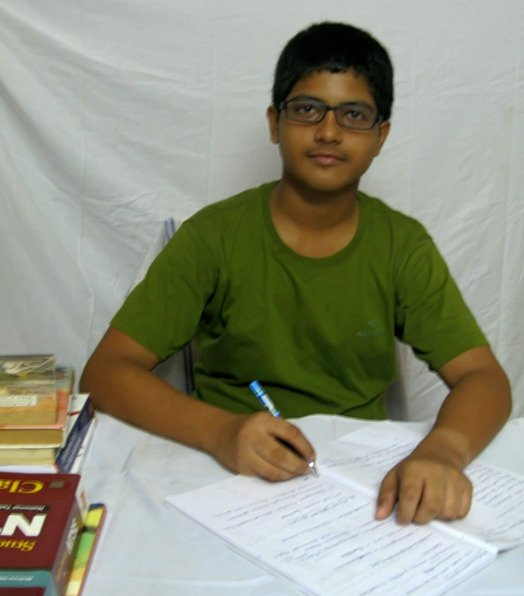

Name : Siba Smarak Panigrahi
Short Bio : Second Year UG Student, Department of Computer Science and Engineering, IIT Kharagpur
Mostly in English
Interested To Read Siba Smarak's Work? Click here for
Poems
Stories
Novels
Author is currently working upon two novels which is sure to get over by the end of Summer'20. Stay Tuned!
Back Top